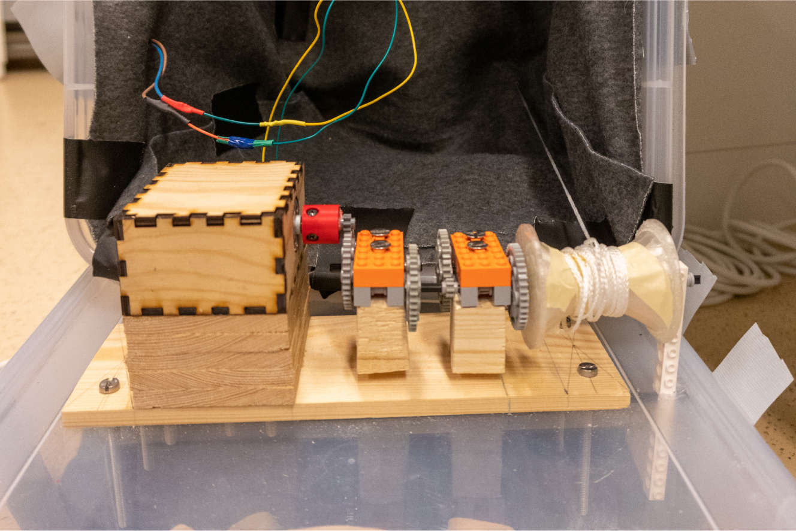
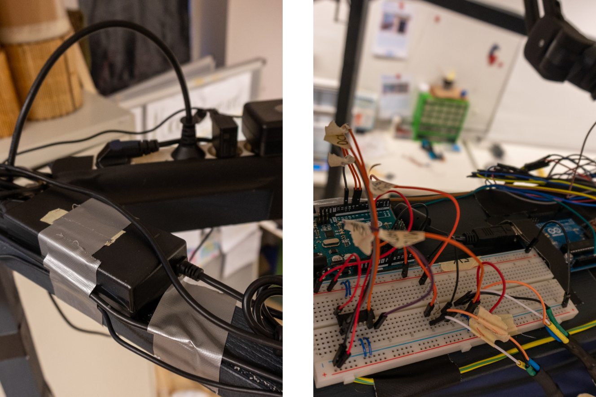
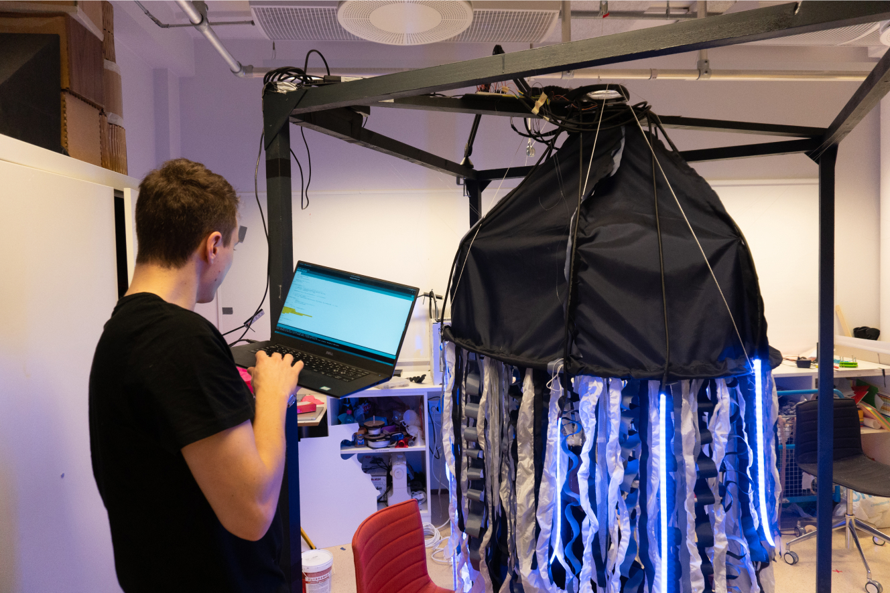
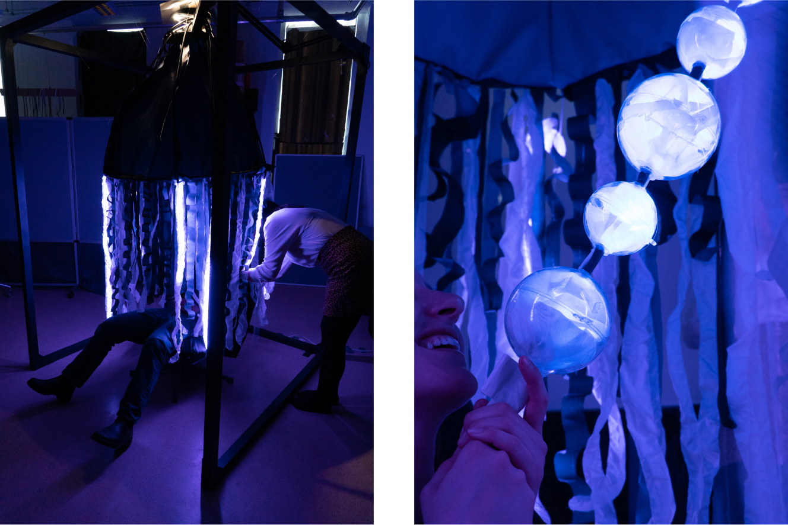
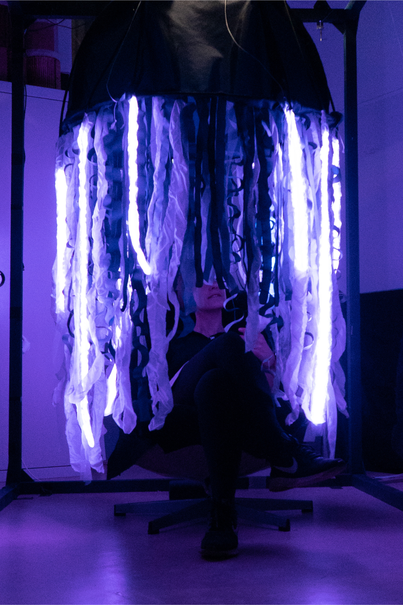
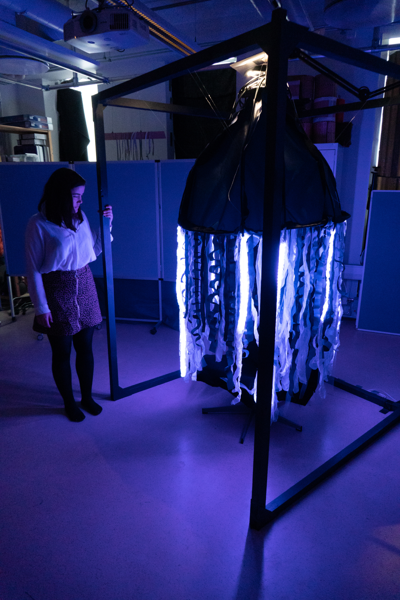

– Medusozoa
Troubleshooting and testing the installation in real time.
University of Oslo · 2019 · Somaesthetic Design
Medusozoa is a jellyfish inspired installation that explored how somaesthetic design can cooperate with bodily sensations. As a group of four we were tasked to create something using “somaesthetic design”, a relatively new design field that explores how design can work together with bodily sensations such as breath, touch, balance and proprioception – the sense of space.
We created a human sized jellyfish installation that gently bobs up and down as soon as a user activates it by blowing air into a set of “bubbles” located on the inside of the installation. By sitting under and inside the jellyfish we wanted to explore how a simple cover can enhance the feeling of a personal space.
The installation used two Arduinos, LED strips, a microphone for sensing air being blown, a set of gears and ropes in order to lift and achieve the bobbing, and a proximity sensor for determining the when to lift and release the rope.
I worked as a designer and developer, planning and programming how we could make this installation work. We started the design process by exploring what somaesthetic design could be through different tests of balance, dexterity, vison, tangible interactions, and sound. The work with the final installation consisted mainly of designing solutions, soldering components and programming the Arduinos.
The project was created as a part of a course where we continually held presentations sharing our progress and challenges. The course ended with an informal ceremony where guests could explore and test the different installations put up by us students.
Somaesthetic Design, Arduino
Images from the build process.
The gearbox that pulls the jellyfish up and down was created using Lego, 3D-printing, laser cutting and a DC motor.
The power supply and the two Arduinos powering the whole installation.
Troubleshooting and testing the bobbing movement.
Images showing the installation in use and the air bubbles used to start the bobbing movement.
The installation in use.
An image that shows the size of the whole installation.
jakobk@jakobk.no